Tutorial sobre Estruturas de Repetição em JavaScript
Introdução
As estruturas de repetição são fundamentais na programação...
Estrutura for
O laço for é ideal quando sabemos o número de repetições...
exemplo 1- For
Listar números primos de 1 a 10
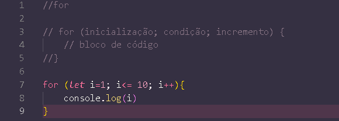
Saída
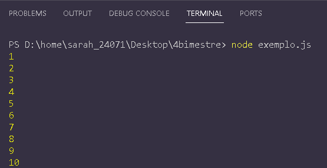
exemplo 2- For
soma de números de 1 a 5
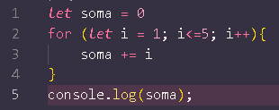
Saída
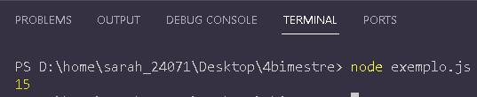
exemplo 3- For
Listar os números ímpares de 1 a 10
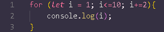
Saída
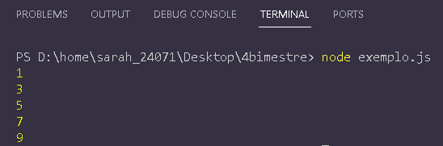
exemplo 4- For
imprimir Olá 3 vezes
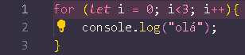
Saída
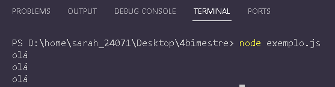
exemplo 5- For
imprimir os quadrados dos números de 1 a 3
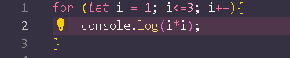
Saída
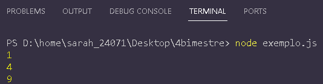
Estrutura while
O laço while é usado quando não sabemos o número de repetições...
exemplo 1- While
Soma dos números até que o total seja maior que 20
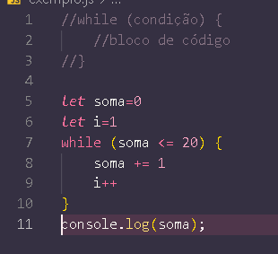
Saída
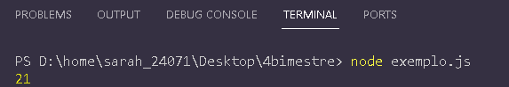
exemplo 2- While
Contagem regressiva de 10 até 1
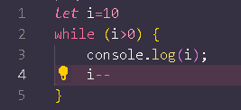
Saída
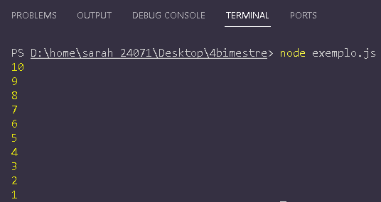
exemplo 3- While
imprimir números de 1 a 3
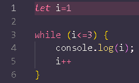
Saída
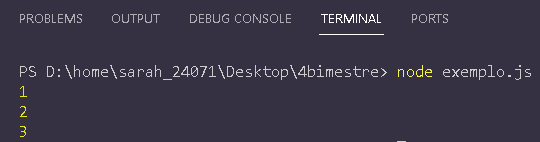
exemplo 4- While
imprimir "olá" até que i seja maior que 2
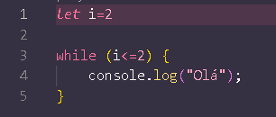
Saída
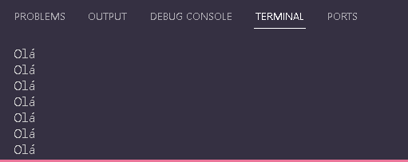
exemplo 5- While
somar os números até que o total seja maior que 10
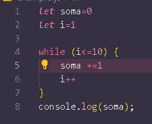
Saída
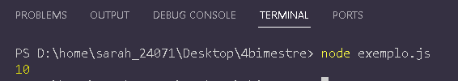
Estrutura do...while
O laço do...while sempre executa o bloco de código ao menos uma vez...
exemplo 1- do...while
imprimir números de 1 a 3
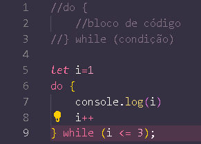
Saída
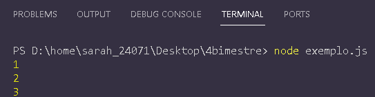
exemplo 2- do...while
contagem regressiva de 5 até 1
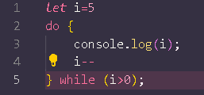
Saída
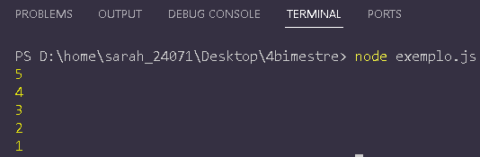
exemplo 3- do...while
multiplicar números de 1 a 4 por 3
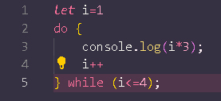
Saída
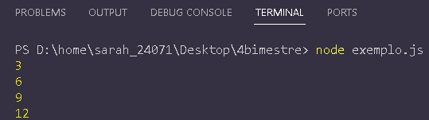
exemplo 5- do...while
imprimir os números de 2 em 2 até 10
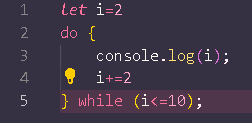
Saída
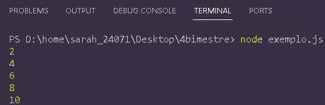
Exercícios
- Usando
for, crie um programa que liste todos os números pares entre 1 e 50.
- Com
while, crie um código que encontre o primeiro número divisível por 7 entre 1 e 100.
- Com
do...while, implemente um código que peça ao usuário para adivinhar um número entre 1 e 10, repetindo até que acerte.